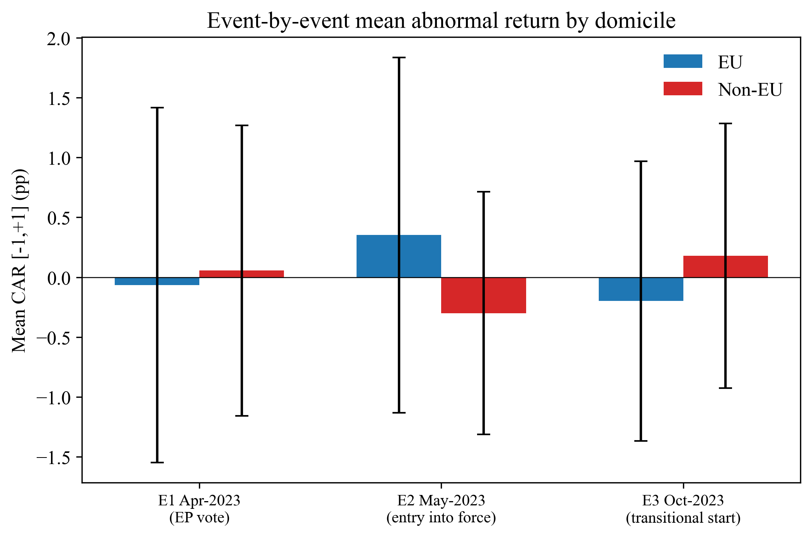

CBAM Equity RepricingCBAM 与股票重新定价
First-author research with Luis Seco and Azin Sharifi: 37 metals producers, three policy events, and a careful distinction between a missing signal and evidence of no effect.与 Luis Seco、Azin Sharifi 合作的第一作者研究：37 家金属企业、三个政策事件，区分“没有检出信号”和“证明没有效应”。
Climate Finance气候金融
Event Study事件研究
Model Risk模型风险